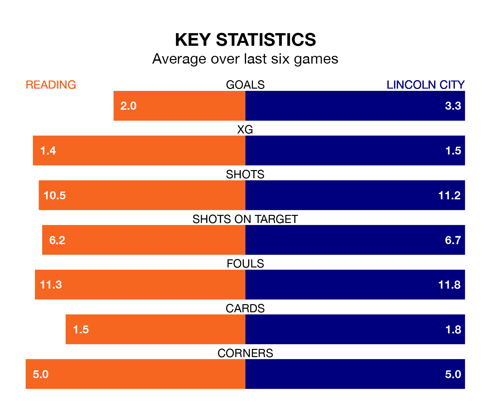

Lincoln City visit Reading at the Select Car Leasing Stadium on Saturday on the back of five consecutive wins in EFL League One.
Lincoln have picked up 16 points from their last six games, and they face a Royals side who lost their last match, and have collected nine points from the last possible 18.
With Lukas Jensen between the sticks, Lincoln can rely on one of the league's safest pair of hands. He has kept 18 clean sheets in his 40 appearances this season, and no 'keeper has prevented the opposition scoring more often in EFL League One.
In Reading's net, David Button has eight clean sheets in 36 games. He has conceded a goal every 70 minutes, 70% more often than the 120 minutes between goals for Jensen.
With 60 goals in 41 games so far this season, City are scoring more than average in the league with 1.5 goals per game. And they are conceding fewer than average, letting in 34 goals at a rate of 0.8 per game.
The Royals are also above average scorers, with 1.4 goals per game, compared to a league average of 1.3. They have conceded 1.5 goals per game.
The Imps are sixth in the table after 41 games, of which they have won 18 and drawn 13, earning 67 points.
The home side are eight places behind the visitors in 14th, with 14 wins and nine draws putting them on 51 points.
Reading's last match was on Monday, a 5-2 loss against Bolton Wanderers, with Lewis Wing and Paul Omo Mukairu getting the goals for the Royals.
Lincoln beat Carlisle United 3-1 last time out, also on Monday, with Ben House, Joseph Taylor and Teddy Bishop on the scoresheet.
Saturday's match will be refereed by Alex Chilowicz, who has taken charge of five EFL League One games so far this season, issuing no red cards and booking 17 players. He has not awarded any penalties.
He is yet to oversee a match featuring either Reading or Lincoln this season.
Updated: 16:41 (UTC), 04/04/24